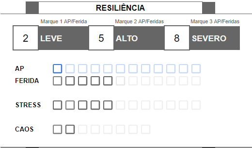

Resiliência
Resiliência representa um conjunto de características que determinam sua fortitude física, mental e capacidade de uso de habilidades.
Limites de Dano, Armor Points (AP) & Feridas
Limites de Dano são valores numéricos associados a Leve, Alto e Severo. Para evitar cálculos matemáticos, quando você recebe dano você deve comparar o valor com seus limites de dano e então marcar o número de AP/Feridas correspondente.

Armor Points (AP) aparecem quando seu personagem possui armadura, seja ela um equipamento ou natural. Seu tipo de armadura determina a quantidade de AP que você possui. Quando você recebe dano, caso possua AP, você irá marcar de 1 a 3 AP, representando o quanto sua armadura foi danificada.
Feridas representam lesões físicas e ferimentos experienciados por um personagem durante a aventura. A quantidade de pontos de Ferida variam entre as espécies e suas peculiariedades. Quando você recebe dano, você irá marcar de 1 a 3 Feridas, representando o quanto de vida você perdeu. Caso seu personagem possua AP, o dano é primeiramente diminuído de lá, a não ser que a fonte de dano diga o contrário.
Marcando AP e Ferida
Quando o GM lhe diz para tomar dano, compare o valor do dano com os limites e marque a quantidade de AP ou Ferida de acordo com o nível de dano:
- Dano abaixo de Leve: você não recebe dano.
- Dano Leve: marque 1 AP/Ferida.
- Dano Alto: marque 2 AP/Feridas.
- Dano Severo: marque 3 AP/Feridas.
Se você marcar seu último AP, narrativamente sua armadura fica danificada e mecanicamente você fica sem AP até você recuperar de alguma forma, sendo ela automática com o tempo ou através de consertos ou recursos, isso vai depender da sua espécie.
Se você marcar sua última Ferida, você morre.
Durante descansos ou através do uso de algum item, habilidade ou recurso, você poderá recuperar AP ou Ferida, assim apagando a marca da sua ficha.
Stress
Stress representa seu estado mental, o quão estressado, desgastado você está mentalmente. Ao longo da aventura você receberá danos que podem ir direto para seu stress, ou algumas situações podem lhe desgastar, deixando-o com stress. Quando você recebe dano em Stress, esse dano é causado diretamente no marcador, sem se beneficiar da mecânica de limites de dano ou AP.
Você pode receber Stress quando:
- Algum move de uma criatura contra você, armadilha, dispositivo ou qualquer outro tipo de perigo diga explicitamente que causa dano em Stress.
- Você realiza algum move que explicitamente diga que você recebe Stress.
- Você realiza algum move e falha ou deve encarar complicações, e o GM indica que você deve receber Stress como consequência.
Se você marcar seu último Stress, você cai incosciente no chão e deve repousar por 24 horas para voltar a consciência.
Assim como AP e Ferida, você pode recuperar Stress durante descansos ou com o uso de algum item, habilidade ou recurso. Resultados de check como Sucesso Crítico também recuperam Stress.
Caos
Caos é a força e matéria que compõem tudo no universo. Os Regentes do Universo são os grandes mestres especialistas em uso dessa força, construindo e modificando constantemente o universo. Algumas criaturas, como seu personagem, podem utilizar a força do Caos de maneira limitada para realizar moves especiais conhecidos como Habilidades.